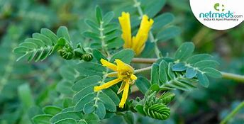

Botanical Name
Tribulus terrestris Linn.
Family
Zygophyllaceae
Introduction
It is one of the important mutrala drugs in Ayurveda.
Names in Different Indian Languages
- English: Land-Caltrops, Puncture Vine
- Hindi: Gokharu
- Kannada: Negalu, Sennanegalu
- Malayalam: Nerinnil
- Sanskrit: Gokshura
- Tamil: Sirunenunji, Nerinjil, Nerunjil
- Telugu: Palleru
- Unani: Khaar-e-Khasak Khurd
Synonyms
- Gokshuraka
- Kshudra (Laghu) Gokharu
- Shvadamshtraa
- Swaadu-kantaka
- Trikanta
- Trikantaka
Classification according to Charaka, Susrutha & Vagbhata
- Charaka: Sothahara, Mutravirecaniya, Krmighna
- Susrutha: Vidarigandhadi, Viratarvãdi, Laghu Pañcamüla Viratarvadi
- Vagbhata: Vidarigandhadi
Varieties & Adulterants
Larger var. is equated with Pedalium murex Linn. The fruits of both varieties are conical and have four spines, not three as the synonyms denote. Hence, Acanthospermum hispidum DC. and Martynia annua Linn. have been suggested as the source of Trikantaka.
- Pedalium murex Linn
- T. terrestris
- Xanthium strumarium
- Martynia diandra
- Acanthospermum hispidium
Morphology
A small, prostrate, hirsute or silky hairy herb.
- Leaves-stipulate, compound, pinnate, opposite, usually unequal, pinnate; leaflets 6-8 pairs, oblong
- Flowers solitary, axillary or leaf-opposed, yellow or white.
- Fruits-globose, hairy, 5-angled, spinous with 2 long and 2 short spines on each cocci.
- Seeds-obliquely pendulous. (Flowers and fruits during April-September).
Distribution & Habitat
Dry places in India.
Chemical Constituents
- Sapogenins, Diosgenin, Gitogenin, Chlorogenin, Ruscogenin
- Rutin, Quercetin, Kaempferol, Kaempferol, Glucoside
- Rutinoside, Tribuloside, Carboline, Harmane, Harmine, Harmol
Properties
- Guna: Guru, Snigdha
- Vipaka: Madhura
- Rasa: Madhura
- Virya: Sita
Karma
Vãta-pitta hara, Vrsya, Mutrala, Rasayana, Deepana, Hridya, Sulaghna, Diuretic, Demulcent, Anti-inflammatory, Anabolic, Spasmolytic, Muscle Relaxant, Hypotensive, Hypoglycaemic
Indication
- Mütrakrichra, Prameha, Hrdroga, Arsas, Vãta-Kãsa, Klaibya
- Anorexia, Calculus Affections, Urolithiasis, Crystalluria, Cardiopathy, Scabies, Urinary Discharges, Pruritus, Cough, Asthma
Part Used
Whole plant
Dosage
- Leaf juice: 10-15 ml
- Powder: 2-4 g
- Decoction: 50-100 ml
External Use
Leaves are tied on wounds.
Internal Uses
- Nervous System: Analgesic and Vatashamak. Therefore used in neural debility, painful conditions, and Vata disorders.
- Digestive System: Stomachic, astringent, antihelmintic, but laxative in large dose, appetite, piles, and helminthiasis.
- Circulatory System: It is a cardiotonic, anti-inflammatory, and helps in haemorrhagic. Fruit juice is useful in amoebiasis and splenomegaly.
- Respiratory System: Used in cough and asthma.
- Reproductive System: Useful in preventing abortion, vaginal disorders, impotency, and post-natal discharges.
- Urinary System: Diuretic, dissolves calculi and amorphous calculi. Therefore useful in urinary calculi, dysuria, and cystitis.
- Satmikaran: Useful in debility.
Important Yogas or Formulations
- Dasamoola katutraya
- Brihtyadi kashya
- Dasamoola kashaya
- Dasamoola navaneetham
Therapeutic Uses
- Vãjikarana: Powder of Gokshura fruit is boiled with milk and consumed (Ca. Ci)
- Amavãta: Decoction of Sunthi and Gokshura will be useful (C. D.)
- Kesa Vardhana: Gokshura and the flowers of Tila are applied externally by making them into paste using honey (Sa. Sam.)